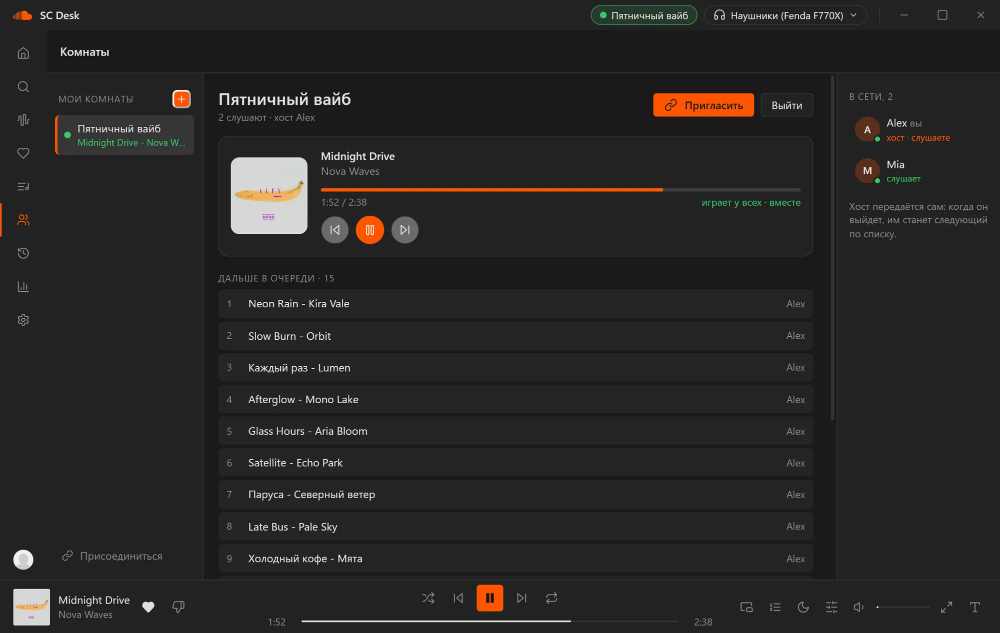
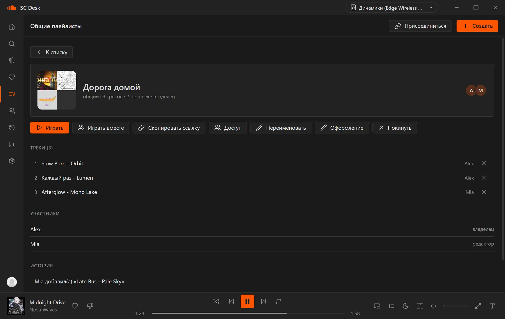
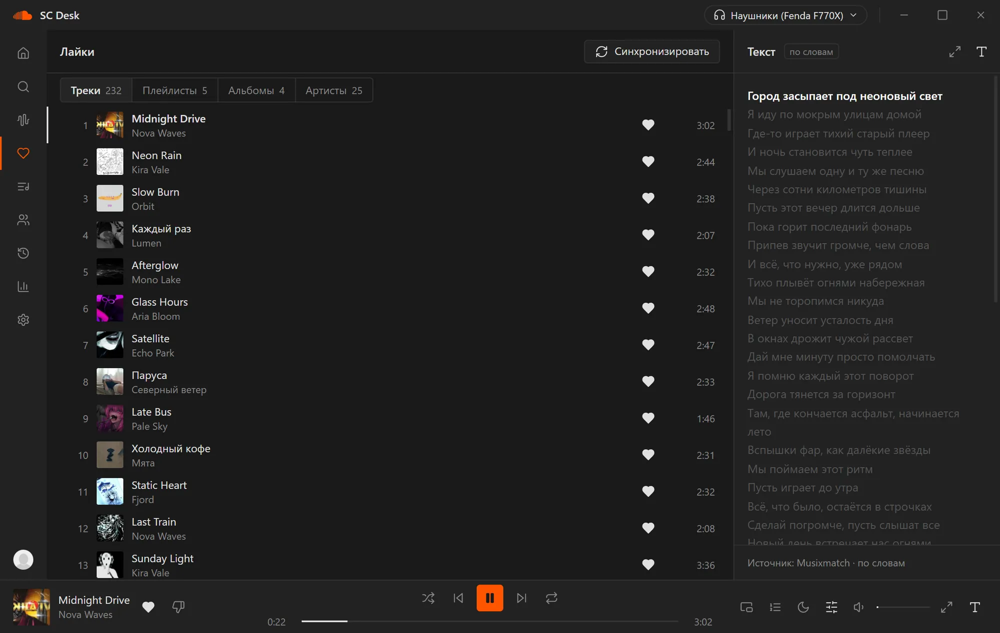

- 1 of 4
My Wave
A selection that learns from your likes, skips and how tracks sound. Pick the mood: more new, only familiar, calmer or more energetic.
- 2 of 4
Rooms
Listen together with friends: one track at everyone's place at once, to a fraction of a second. Audio and chat are not sent, only commands. A room lives on even when nobody is in it.
- 3 of 4
Shared playlists
One list for everybody. You see who added what, there is a history of changes and roles. Give it a picture or a colour and press "Play together".
- 4 of 4
Lyrics
Lyrics by line and by word, a full-screen mode, and search of your likes by a line of a song.


